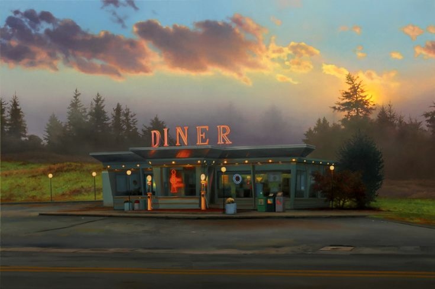

Odin's Diner
by:
pchryss!

Feeling energetic and in the mood for some fuel?
Click here for a burrito bowl recipe!
Just woke up and craving a delicious breakfast?
Click here for a belgian waffle recipe!
Had a long day and want to watch some tv on the couch?
Click here for a pizza recipe!